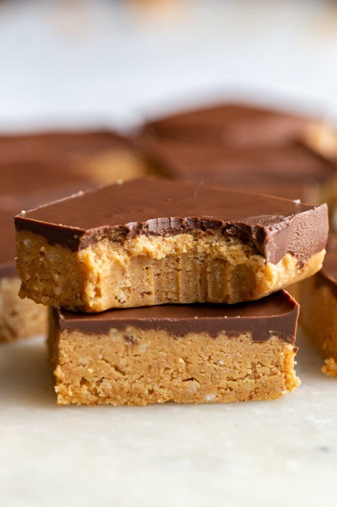

Peanut Butter Bars

Peanut Butter Bars
I found this Peanut Butter Bars recipe to complete this project. As I am not planning on publishing
this recipe website I figure it works. I will have to compare this recipe to my mothers not sure
if they are identical or not.
Equipment
- KitchenAid Mixer
- Mixing bowl
- 8x8 or 9x9 baking pan
- Parchment paper
- Microwave-safe bowl
- Fridge
Ingredients
- 2 cups creamy peanut butter
- 1/2 cup salted butter
- 1 teaspoon vanilla extract
- 1/3 cup brown sugar
- 3 cups powdered sugar
- 4 ounces semi-sweet chocolate
- 1 tablespoon salted butter
Steps
- Mix peanut butter, butter, sugars and vanilla in a stand mixer using the paddle attachment.
Beat on medium speed for about 3 minutes, scraping the sides of the bowl as needed.
The peanut butter will be very soft. If you feel it is too sticky, feel free to add a little
more powdered sugar for a firmer bar. 2 cups creamy peanut butter*, ½ cup salted butter**,
1 teaspoon vanilla extract , ⅓ cup brown sugar, 3 cups powdered sugar
- Place parchment paper in the bottom and up the sides of an 8×8" or 9×9" baking pan.
Press the peanut butter mixture down in the bottom of the pan evenly.
- Melt the melting wafers or chocolate chips in a microwave-safe bowl in 20
second increments, stirring between each interval. Be careful to melt the chocolate
slowly…chocolate will burn quickly if it gets too hot. 4 ounces semi-sweet chocolate
- Spread the chocolate evenly over the peanut butter mixture. Allow the bars to set for about 20
minutes. You can place in the fridge if needed, but don't forget about them and don't let the
chocolate fully set or they will be hard to cut.
- Pull up on the sides of the parchment paper and place the bars on a flat surface.
- Cut into 16 bars (or cut smaller) and allow the chocolate to set completely.
- Store the bars in an airtight container. They are great stored in the refrigerator and
eaten cold.